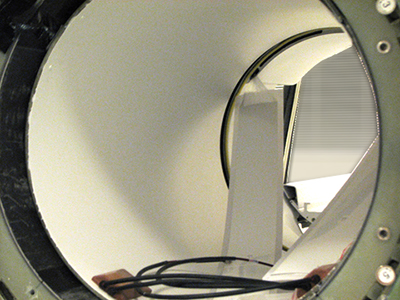
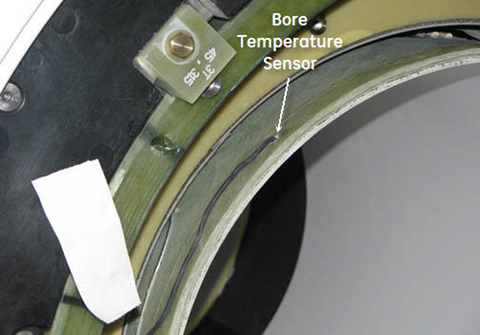
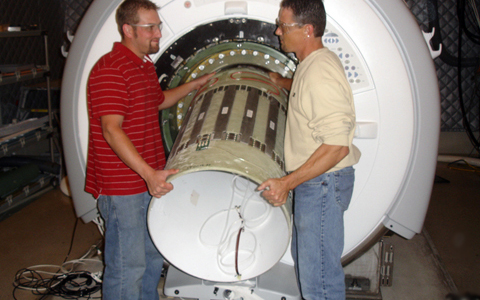
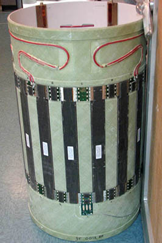
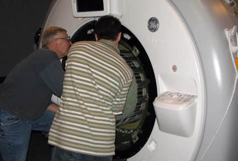
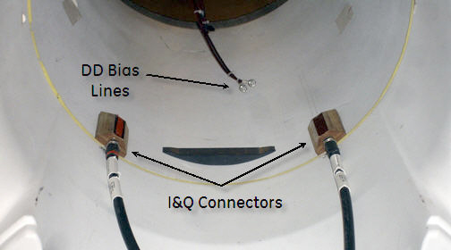
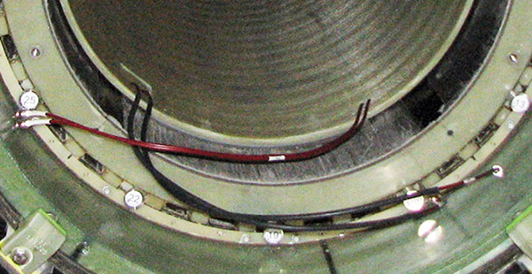
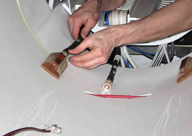

Operating Documentation
Direction 5500113, Rev# 3
Discovery MR450 1.5T Service Methods
Module Version 12.0, Version Date 7/14/10
Operating Documentation |
| Required Persons | Preliminary Reqs | Procedure | Finalization |
|---|---|---|---|
| 2 minimum | Not Applicable | 4 hours |
Use this procedure to replace the RF Body Coil.
| Item | Qty | Effectivity | Part# | Manufacturer | |
|---|---|---|---|---|---|
| Field RF Coil Tuning Kit | 1 | - | 5311727 | - | |
| Authorized Personnel Floor Sign | 1 | - | 2289812 | - | |
| Non-Magnetic Service Tool Kit | 1 | - | 5112581 | - | |
| Safety Glasses | 1 | - | - | - | |
| Cut-Resistant Gloves | 1 | - | - | - | |
| Safety Shoes | 1 | - | - | - | |
| Small carpenter's level | 1 | - | - | - | |
| Item | Qty | Effectivity | Part# | Manufacturer |
|---|---|---|---|---|
| Adhesive | 1 | - | 46-220312P1 | - |
| Anti-seize | 1 | - | 2119594 | - |
| Item | Qty | Effectivity | Part# | Manufacturer | |
|---|---|---|---|---|---|
| Discovery MR450 1.5T Body Coil and FRU Case | 1 | - | 2208999-14 | - | |
| ||||
| Strong Magnetic Field! | ||||
| Ferrous materials can become dangerous projectiles in the presence of the magnetic field Produced by the Magnet. | ||||
| Do not Bring any ferromagnetic tools or equipment into the magnet room. |
| ||||
| Dangerous Work Area! | ||||
| Use of heavy equipment for coil removal and replacement presents hazards to all personnel in the area. | ||||
|
| Condition | Reference | Effectivity |
|---|---|---|
Contact a trained, local Body Coil Tuning Expert PRIOR to starting this procedure, as the coil will need to be tuned as part of the replacement finalization. If necessary, contact the Modality Operations Manager for a list of trained individuals. | - | - |
Follow Lockout/Tagout procedures per LOTO FOR XRFD Amp and PEN Cabinet document.
Remove Split Bridge. See Bridge Removal and Replacement document for details.
Remove the Front End Bell. See Front End Bell Removal and Install document for details.
Disconnect the four (4) DD Bias lines in the front and the I&Q lines in the rear of the RF Body coil.
If installed, disconnect bore lights from the body coil. There are four (4) pop pins that need to be popped out for removal.
Illustration 1: Bore Lights

| ||||
| Do not use the air hose manifolds to remove the RF body coil! | ||||
Partially slide out the old RF Body Coil. Disconnect the Bore Temperature Sensor (shown below) and tape to the magnet enclosure so it is out of the way.
Illustration 2: Bore Temperature Sensor cable

Fully remove the coil and set aside on its end (see Illustration 3 and Illustration 4).
Illustration 3: Remove Coil

Illustration 4: RF Body Coil

Slide in new RF Body Coil (shown below). The DD Bias lines are in the front and the I&Q connectors face the rear.
Illustration 5: Slide in RF Body Coil

Before sliding RF Body Coil in all the way, reconnect the Bore Temperature Sensor to the coil (see Bore Temperature and Room Ambient Sensor Replacements).
Align the I&Q connectors in the rear so they are as close to the 7 o'clock and 3 o'clock positions as visually possible. (Shown below.)
Illustration 6: Center RF Body Coil

Press the RF Body Coil so it is flush with the Rear End Bell.
If removed, connect the four (4) pop pins and install the bore lights to the body coil.
Reconnect the DD Bias lines and the I&Q lines (see Illustration 7 and Illustration 8).
Illustration 7: Reconnect DD Bias Lines

Illustration 8: I&Q Connectors

Replace the front end bell. Refer to Front End Bell Removal and Install. There should be a 2.0 to 2.5 mm gap between the front end bell and the RF body coil.
Replace the split bridge. Refer to Bridge Removal and Replacement.
Remove LOTO.
Have the previously contacted, properly trained Body Coil Tuning Expert tune the RF Body Coil.
Run the TR Dynamic Disable Calibration.
Run the System Gain Calibration.
Run the Echo Planar Test (EPT).
Perform a quick head and body scan to ensure the system is functioning properly.